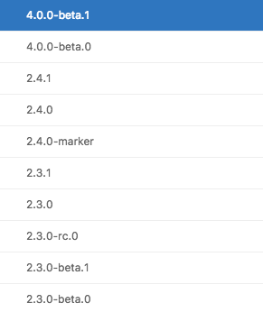
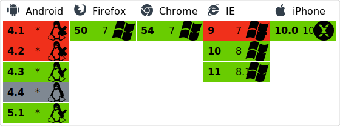
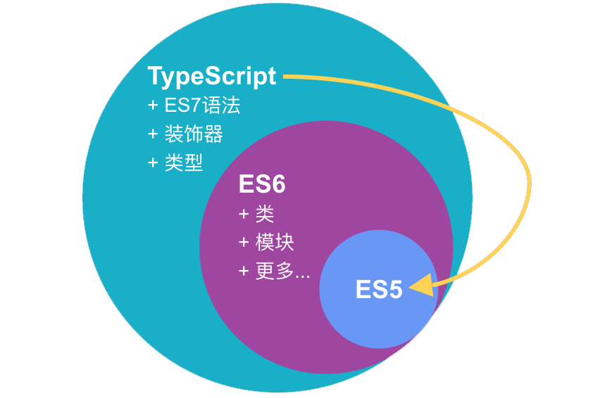
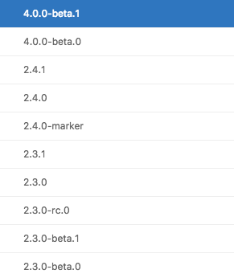
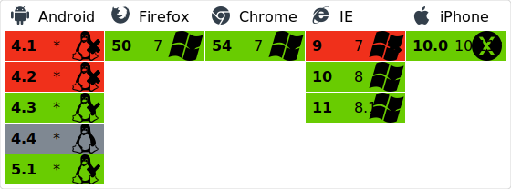

初识 Angular2
--郭德实
Angular 是什么？
- 跨平台开发 - Web应用、移动Web应用、原生移动应用和原生桌面应用等
- 扩展性 - 扩展HTML的语法以清晰，简洁地表达应用程序的组件
- 一站式 - router, DI, form, pipe...
- 速度与性能 - Web Worker，服务端渲染，AOT

Angular X
Browser support of Angular2
Using Typescript
Architecture

--郭德实
Angular X
Browser support of Angular2
